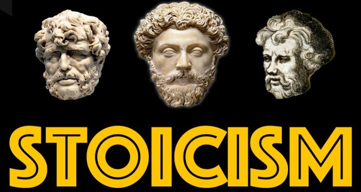

Cei 3 Stoici
Marcus Aurelius a fost împăratal Imperiului Roman într-un moment de maximă expansiune a acestuia, deci unul dintre cei mai puternici oameni care au trăit vreodată pe fața pământului.
În ciuda acestui fapt, din notele scrise în jurnalul său, reiese că avea o preocupare pentru compasiune față de semenii săi și pentru controlul impulsurilor sale.
Epictetus a îndurat ororile sclaviei, dar a reușit să fondeze propria școală de filozofie și să învețe multe dintre mințile luminate ale Romei.
În fine, Seneca uimește lumea filozofiei și nu numai atât prin scrisorile sale adresate unor prieteni, cât și prin liniștea afișată în fața morții decise de împăratul Nero.
Singura sa preocupare este legată de confortul pe care-l poate aduce în acel moment dramatic soției sale și prietenilor săi.
Dincolo de aceste 3 figuri decisive pentru istoria și dezvoltarea filozofiei stoice, au existat numeroși practicanți faimoși – regi, președinți de state, artiști, scriitori, oameni de afaceri din vremuri trecute și vremuri actuale.
Regele prusac Frederic obișnuia să țină asupra sa, în sacul șeii, scrierile stoice cărora le atribuia norocul care-i însoțeau acțiunile.
Eseistul și politicianul Montaigne avea un citat din Epictetus gravat deasupra biroului la care lucra și la care-și petrecea cea mai mare parte a timpului.
George Washington a luat primul contact cu filozofia stoică la 17 ani, prin intermediul unui vecin și ulterior a pus în scenă o piesă despre stoicul Cato pentru a le ridica moralul oamenilor săi în timpul iernii grele petrecute la Valley Forge.
Thomas Jefferson avea scriosorile lui Seneca pe noptiera sa în noaptea în care a murit. Economistul Adam Smith a studiat Stoicismul în timpul școlii cu un profesor care a tradus lucrările lui Marcus Aurelius. El a fost influențat de ideile acestei filozofii când a formulat teoria interconectivității lume – capitalism.
Gânditorul politic John Stuart Mill a scris despre Marcus Aurelius și Stoicism în faimoasa sa lucrare On Liberty, numindu-l „cea mai înaltă creație etică a culturii antice”.
Epictetus a îndurat ororile sclaviei, dar a reușit să fondeze propria școală de filozofie și să învețe multe dintre mințile luminate ale Romei.
În fine, Seneca uimește lumea filozofiei și nu numai atât prin scrisorile sale adresate unor prieteni, cât și prin liniștea afișată în fața morții decise de împăratul Nero.